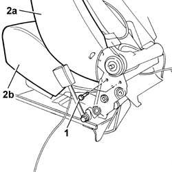
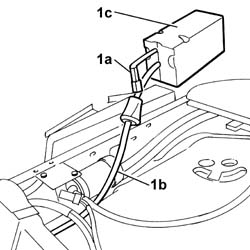

7045N15 FRONT SEAT BACK MASSAGE/LUMBAR ADJUSTMENT DEVICE PUMP (1), LEFT OR RIGHT - R.R. WITH SEAT REMOVED
- Path
- Procedures > 70 FITTINGS > 7045 FRONT SEATS > 7045N COMFORT FRONT SEAT FUNCTIONS > 7045N15 FRONT SEAT BACK MASSAGE/LUMBAR ADJUSTMENT DEVICE PUMP (1), LEFT OR RIGHT - R.R. WITH SEAT REMOVED
- Kind
- repair procedure (removal / refitting; the operation number is the code)
- Applies to
- all engines; all production periods
- Interactive page
- https://sloeber94.github.io/elrnDB-lThss/en/#/841003022
Applies to: all engines; all production periods
 Removing
Removing
 Refitting
RefittingOp. 7045J10 SWITCH UNIT FOR MOVEMENT OF ONE FRONT SEAT, L/H OR R/H - R+R FOR CHECK
Op. 7045A42 L/H OR R/H FRONT SEAT GUARD (ONE) - R+R
[all the elements]
Op. 7045A98 FRONT SEAT REAR POUCH PANEL, LH OR RH - R R
Op. 7045N14 FRONT SEAT BACK ELASTIC SUPPORT (1), LEFT OR RIGHT - R.R. WITH SEAT REMOVED
Applies to: all engines; all production periods
1. Undo the bolts securing the backrest to the cushion on both sides.
2. Separate the backrest (2a) from the cushion (2b).

Applies to: all engines; all production periods
1. Disconnect the electrical connection for the pump (1a) and the pneumatic pipe (1b), then release the pump (1c) and remove it.

Applies to: all engines; all production periods
Refitting
RemovingFit the back in the backrest and connect the electrical connection for the pump and the pneumatic pipe.
Fit the backrest and tighten the bolts fixing it to the cushion.
Op. 7045N14 FRONT SEAT BACK ELASTIC SUPPORT (1), LEFT OR RIGHT - R.R. WITH SEAT REMOVED
Op. 7045A98 FRONT SEAT REAR POUCH PANEL, LH OR RH - R R
Op. 7045A42 L/H OR R/H FRONT SEAT GUARD (ONE) - R+R
[all the elements]
Op. 7045J10 SWITCH UNIT FOR MOVEMENT OF ONE FRONT SEAT, L/H OR R/H - R+R FOR CHECK
Topics linked from this page (4)
- 7045A42 Front seat GUARD (one), left or right - R.R.
- 7045A98 Front seat rear pouch panel, left or right - R.R.
- 7045J10 switch unit for movement of one front seat, l/h or r/h - r+r for check
- 7045N14 FRONT SEAT BACK ELASTIC SUPPORT (1), LEFT OR RIGHT - R.R. WITH SEAT REMOVED